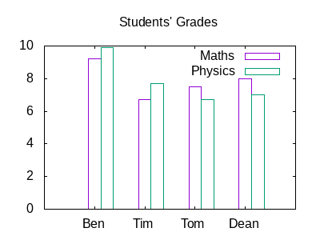
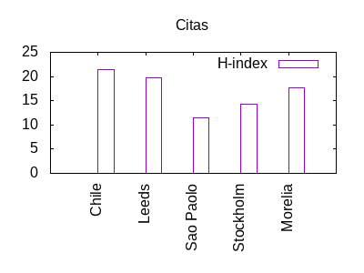
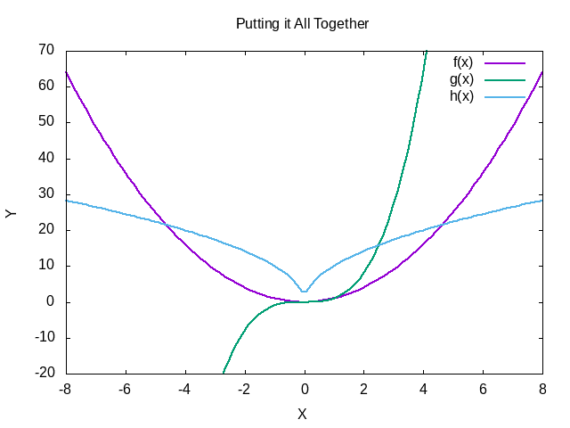
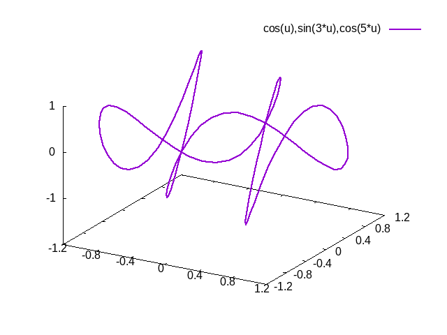
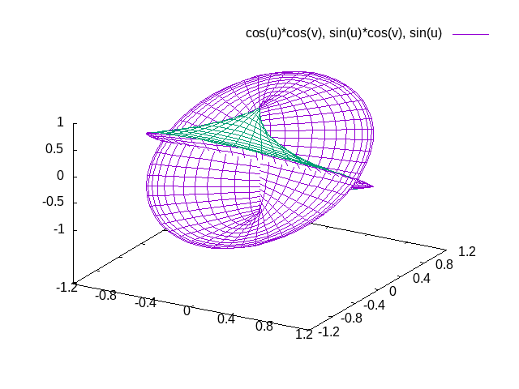
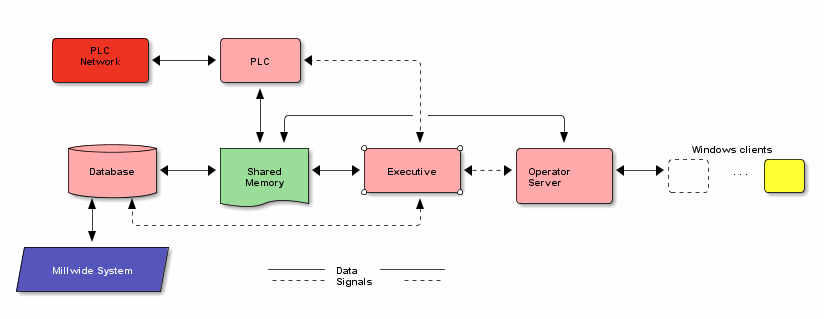
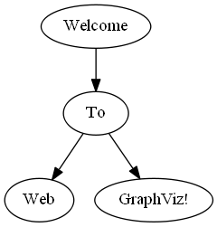

Emacs
Commands
C-u 10- Repeat next command 10 times.
M-x eval-buffer (C-x C-e)- Execute Lisp Code until cursor position. (in Scratch Buffer)
C-x C-c- Quit
Getting Help on Commands
(e.g. Shortcuts)
C-h w (M-x where-is)- find a function
C-h k- get description of shortcut, tells you to what command it's bound
M-x describe-bindings- get list of all shortcuts
Dired File Browser
C-x dorC-x dired- Start dired, hit Enter to view the current folder in a buffer.
q- Quit dired.
In the folder buffer:
+ :: Create a new subdirectory.
i :: Insert the subfolder at cursor.
Rename multiple files:
- goto dired
C-x C-qswitch to read-write mode- make changes
C-c C-c
Macros
F3(C-x c)- start macro recording
F4(C-x ))- stop macro recording
F4(C-x e)- execute macro
very useful (evil-numbers)
C-c +/-- increase/decrease number before cursor
Edit Text
C-x 8 <Enter>- Insert Unicode Chars
C-u C-x TAB- Indent Code
C-w- Kill Selection
Selections, Marks
- set Point then click
rightMouse - Select region between Point and Mouse Click position
M-leftMouse-drag- Secondary Selection (get rid: M-leftMouse somewhere), also Dbl-Click
Copy Paste
Kill - Ring
Funktioniert wie ein Stack. Wenn man etwas runternimmt, dann ist es weg (?)
M-y gibt frühere kills aus (geht nur nach C-y) M-1|2|3|… C-y Yank kill-ring Eintrag
Column/Block Editing
cua-mode (common user access mode)
C-<enter>: highlight text <enter>: move from corner to corner
bbbaaa
bbbaaa
bbbaaa
rectangles
select area with C-<space> (that defines a rectangle, though too much is selected)
C-x r t- replace text in rectangle, insert same string on all lines (e.g. select 1st column and insert e.g. "zzzzz", you can also paste)
C-x r k- kill rectangle
C-x r o- insert blanks
C-x r M-w- Copy (you have to yank afterwards with C-x r y !)
C-x r d- delete
C-x r y- yank last killed rectangle (upper left corner at cursor)
Find and Replace
M-%- simple replace
C-M-%- regexp replace
!- replace all
Undo/Redo
C-x u- Open Undo Tree Visualizer
C-q- Quit Undo Tree Visualizer without making changes
Multiple Cursors
https://github.com/magnars/multiple-cursors.el
Typical use:
C-leftMouse- Set individual cursors with mouse.
leftMousethenrightMousethenC-rightMouse- Mark region and set multiple cursors.
M-r- Select rectangular region.
Multiple cursors cut/paste:
C-x r y- 1. kill in mc-mode 2. leave mc-mode 3. yank in rectangular mode
C-rightMouseorC-S-x C-S-x- Set cursors on all (before) marked lines.
C-M-a(mark-all-like-this)- Set multiple cursors based on currently marked text. E.g. mark a word with double click and press
C-M-a, a cursor will be placed after each match of the word. C-<- Set cursor at previous line..mc-lists.el
C->- Set cursor at next line.
Enter- Exit multiple-cursor-mode.
C-jto enter newline.
Undo Tree
C-x uvisualize the undo treeC-_ C-/ Joe: C-zUndo changesM-_ C-? Joe: C-M-zRedo changes
In the Tree Buffer:
<up>/<down>Undo/redo changesundo-tree-visualizer-diffShow differences when browsing through the tree.
Evil Numbers
Increment/decrement number literals.
Insert shell command output into current buffer
C-u M-x shell-command- Insert e.g. ls -l
Moving around
M-SPC- Activate Jump Mode (very cool!)
Simple movement
C-d- right
C-b- left
C-p- up
C-n- down
More
C-u- Numeric Argument
C-a- Begin of Line
C-e- End of Line
M-f- Word forward
M-b- Word backward
M->- Buffer End
M-<- Buffer Begin
Bookmarks
C-x r m (<bm_name>)- Set (named) bookmark.
C-x r b (<bm_name>)- Jump to (named) bookmark.
C-x r l- List all bookmarks.
Windows and Buffers
Windows
C-x oother-windowGoto next WindowC-x 3split-window-belowC-x 3split-window-rightC-l- Scroll actual line to middle of Window (2x = top of window, 3x = bottom of window)
rotate-emacs package:
rotate-window- Windows are moved clockwise
rotate:even-horizontal- Arranges windows vertically (!) and evenly
rotate:even-vertical- Arranges windows horizontally (!) and evenly
rotate-layout- Changes layout, e.g. horizontal to vertical
Buffers
C-x nC-x p- goto next/previous buffer
C-x b- list current buffer
C-x kkill-bufferC-x 4 0kill-buffer-and-windows
Create a clone buffer (indirect buffer)
C-x 4 cclone-indirect-buffer-other-window(with it's own folding etc.) and open it in new window In my world does the same asclone-indirect-buffer
Search & Replace
Simple Search & Replace
isearch is used.
C-sorisearch-forward- forward (just repeat key combination)
C-s C-w- search for word at cursor
C-r- backward
C-f- regexp search forward (C-S-f: backward)
M-rorM-x isearch-query-replace- Replace (can be started immediatly after search) - this will ask you (hit y, ! replace all remaining)
- customized with
(global-set-key (kbd "C-r") 'isearch-query-replace)
- customized with
M-x whitespace-mode- Show invisible characters tab, linebreak, ect.
Notes:
- Replace with Newline : enter
C-q C-j(quote-insert 0x0A) for replace with
Regular Expressions
C-M-s- Search with RE
C-M-%orM-x query-replace-regexp- Replace (can be started immediatly after search) - this will ask you (hit y, ! replace all remaining)
M-x occur- List lines containing RE
Note:
C-q C-jinserts a newline character. You can use "\n" only in lisp code!!
Regular Expressions:
\1, \2, ..., \n- n-th catching group (
\( ... \)) \&- Stands for the entire match.
\#- Count of replacements already made.
Examples:
Replacement
Special Symbols: [], \(\), \&, \1
c[ad]+r <RET> \&-safe cadr -> cadr-safe
\(c[ad]+\)-safe <RET> \1 cadr-safe -> cadr
Bookmarks
Jump to files and positions in files.
C-x r bJump to Bookmark.C-x r mSet Bookmark.C-x r lList Bookmarks.Edit->Bookmarks->Delete BookmarkDelete Bookmarks.
Terminology
- mode line
- Statuszeile am unteren Window-Rand
- frame
- The application window
- window
- what you would normally call a frame
- buffer
- ~the data, can have the same buffer in multiple windows
- mini buffer
- text faces
- styles for displaying text (
M-x list-faces-display)
Packages
Install
M-x list-packages- fetches a list of available packages from server
Notes:
- Packages will be installed in ~\.emacs.d\elpa
- Keep the
load-pathvariable in mind! For reinstalling org-mode in is necessary to start without loading the init file.
emacs --no-init-file
Uninstall
- delete entries in .emacs
- delete subfolder in elpa-folder
You can also do it via list-packages.
Packages Used
Helm
Configuration
- Replace tab-completion for M-x
- Bookmarks
- find files
(global-set-key (kbd "M-x") #'helm-M-x) (global-set-key (kbd "C-x r b") #'helm-filtered-bookmarks) (global-set-key (kbd "C-x C-f") #'helm-find-files)
Helm Completion
C-c C-y- copy (yank) candidate in completion window to minibuffer
Auto Complete
Shows completion propositions in a popup box.
Notes:
- Requires EXC ESC ESC to cancel.
Evil Numbers
Undo Tree
Multiple Cursors
Emacs Lisp
Goto EmacsLisp.org
Interesting Modes
- artist-mode : draw lines, circles, rectangles etc.
- picture-mode : freely position cursor anywhere
- lisp-mode
Flyspell
M-$ + iAdd word to personal dictionary
Org Mode
Links
- Org-Mode Reference Card: https://orgmode.org/orgcard.txt
- Key Bindings (Functions): https://orgmode.org/manual/Key-bindings-and-Useful-Functions.html
Worg
Written with org-mode, source can be shown.
Org Mode elements
Blocks
Works with : oder _, e.g. begin:src or #+begin_src.
#+BEGIN:<NAME> :noexport Here there is something. #+END:<NAME>
#+begin_srcSource Code (< s TAB)void CDummy::release() { if( theInstance != NULL ) delete theInstance; theInstance = NULL; }
#+begin_exampleLiteral Examples (< e TAB)+-----------------+ | VMCmdPCPosition | +-----------------+ | |- MoveDebugCursor |- ActualClass = DbgPlugin->ToRel(PC) can aaaaaaalsoooooooooooooooooooooooooo be veeeeeeeeeeryyyy looooooooooongggggggggggggggggggggggggggggggggggggggggggggggggggg and will then get a scroll bar to move back and forth.
#+begin_versekeep linebreaks (< v TAB)This could be a poem
With all its linebreaks
and formatting
#+begin_quote(< q TAB)This is quoted text. All my life i've been searching for …Everything should be made as simple as possible, but not any simpler – Albert Einstein
#+begin_center(< c TAB)This is centered text.
#+begin_export html(< h TAB)#+begin_picture(< p TAB)
Templates, Completion
s #+BEGIN_SRC … #+END_SRC e #+BEGIN_EXAMPLE … #+END_EXAMPLE q #+BEGIN_QUOTE … #+END_QUOTE v #+BEGIN_VERSE … #+END_VERSE c #+BEGIN_CENTER … #+END_CENTER l #+BEGIN_LaTeX … #+END_LaTeX L #+LaTeX: h #+BEGIN_HTML … #+END_HTML H #+HTML: a #+BEGIN_ASCII … #+END_ASCII A #+ASCII: i #+INDEX: line I #+INCLUDE: line
customize: org-structure-template-alist
Source code blocks (evaluation)
Check org-babel-do-load-languages in '.emacs'.
Emacs Lisp
(+ 3 2)
5
Python
Note: this is python 3! (need parenthesis)
import numpy as np arr_1 = np.random.randint(1,7,10) print(arr_1)
import matplotlib.pyplot as plt # Import NumPy and Pandas import numpy as np import pandas as pd # ---------------------- Histograms ---------------------------- # Roll 2 6 sided dies get the sum and plot the histogram arr_1 = np.random.randint(1,7,5000) arr_2 = np.random.randint(1,7,5000) arr_3 = arr_1 + arr_2 # Bins reprsent the number of options available 2 thru 12 = 11 # Density returns the frequency of each bin # Range gets tuple with bin range interested in # cumulative=True use a cumulative distribution # histtype='step' genrates a line plot # orientation='horizontal' # color='orange' change bar color plt.hist(arr_3, bins=11, density=True, stacked=True) file_name='mytplot_output' plt.savefig(file_name) file_name
GNU calc
fsolve(x*2+x=4,x)
x = 1.33333333333
Calculate Table
from math import radians, cos result = r*cos(radians(angle)) return result
| angle | r | x |
|---|---|---|
| 30 | 10 | 8.66025403784 |
| 45 | 10 | 7.07106781187 |
| 60 | 10 | 5.0 |
Org-Plot (GNU plot)
| Ben | 9.2 | 9.9 |
| Tim | 6.7 | 7.7 |
| Tom | 7.5 | 6.7 |
| Dean | 8.0 | 7.0 |
set title "Students' Grades" set yrange[0:10] set style data histogram set terminal png size 400,300 plot data using 2:xtic(1) title 'Maths', '' using ($3) title 'Physics'

| Sede | Max cites | H-index |
|---|---|---|
| Chile | 257.72 | 21.39 |
| Leeds | 165.77 | 19.68 |
| Sao Paolo | 71.00 | 11.50 |
| Stockholm | 134.19 | 14.33 |
| Morelia | 257.56 | 17.67 |

| Grades | Mathematics | Physics |
|---|---|---|
| Ben | 9.2 | 9.9 |
| Tom | 6.7 | 7.7 |
| Tim | 7.5 | 6.7 |
| Dean | 8.0 | 7.0 |
Plot functions:
reset set title "Plotting 3 Functions" set xlabel "X" set xrange [-8:8] set xtics -8,2,8 set ylabel "Y" set yrange [-20:70] set ytics -20,10,70 f(x) = x**2 g(x) = x**3 h(x) = 10*sqrt(abs(x)) #plot f(x) w lp lw 1, g(x) w p lw 2, h(x) w l lw 3 smooth bezier # lw ... linewidth plot f(x) lw 2, g(x) lw 2 , h(x) lw 2

3D-Plot:
reset set title "Plot of a 3D-Function" set samp 100 set xtics .4 set ytics .4 set parametric set urange [-pi:pi] set ztics 1 splot cos(u),sin(3*u),cos(5*u) lw 2

set title "Surface Plot" set param set iso 50 set ztics .5 set xtics .4 set ytics .4 set urange [-pi:pi] set vrange [-pi:pi] set hidd splot cos(u)*cos(v), sin(u)*cos(v), sin(u)

Latex pgf TikZ
Categories
- Add a file variable:
#+CATEGORY: MyCategory. - Can span multiple files.
- Default category is the file name (
MyCategory.orgis in categoryMyCategory). - You can assign categories to headings.
- First column in the agenda shows categories.
Check List & Cookies [0/1] [0%]
[ ]Check Box: -_ [_ ]_ eingeben,C-c C-ccheck/uncheck Box die Übersicht[0/1]oben erhält man mit[/]+C-c C-c- update Cookies (
[/]) for whole file
Citation
CLS-File Citation Style Bibliography Style
You need to have bibtex2html in PATH in order for org-ref to work.
Add this line
bibliography:bibliography.bib
The Bibliography will be inserted at this location in the document.
Create entries in .bib files:
- Add with DOI:
C-x doi-add-bibtex-entry
Cite an entry:
- Menu:
Org -> org-ref -> insert-citation
See [Brun.2004].
See on how to customize the citation and bibliography style:
Drawers
New drawers can be defined in org-drawers (M-x customize-variable <RET> org-drawers). Drawers are not exported by default.
clocking info
Footnote
Images
To view images you have to copy the following dlls to \bin: (download: http://gnuwin32.sourceforge.net/packages.html)
- make a symlink instead
- png
- zlib
- zlib1.dll
- libpng - dlls
- libpng14-14.dll (Emacs 24.3.1)
- zlib
- jpg
- jpeg62
- gif
- giflib4.dll
[[file:resources\Gnu.PNG]]

C-c C-x C-v Toggle inline images (org-toggle-inline-images)
Formulas
Simply use $$ and enter Latex-Code.
\(\forall x(Fx \to Nx) \land \phi\)
C-c C-x C-l- Formel-Graphik erzeugen und anzeigen (toggle)
C-c C-c- Remove formula-image
There is a startup option for this
#+STARTUP: latexpreview
Boxed Formula Macro
{{{boxed_formula(\vec{F}= \frac{1}{4\pi\epsilon_0} \frac{q_1 \cdot q_0}{r^2}\vec e_r)}}}
$$\bbox[10px,#073642,border: 1px solid white]{\vec{F}= \frac{1}{4\pi\epsilon_0} \frac{q_1 \cdot q_0}{r^2}\vec e_r}$$
Latex Block:
\begin{align*}
{}&\vec{a}\times \vec{b}=
\begin{bmatrix}
\vec{e_x} & \vec{e_y} & \vec{e_z} \\
a_1 & a_2 & a_3 \\
b_1 & b_2 & b_3
\end{bmatrix}= \\&
\begin{bmatrix}
a_2 & a_3 \\
b_2 & b_3
\end{bmatrix} \cdot\vec{e_x}-
\begin{bmatrix}
a_1 & a_3 \\
b_1 & b_3
\end{bmatrix} \cdot\vec{e_y}+
\begin{bmatrix}
a_1 & a_2 \\
b_1 & b_2
\end{bmatrix} \cdot\vec{e_z}= \\&
(a_2b_3-a_3b_2)\cdot\vec{e_x}-
(a_1b_3-a_3b_1)\cdot\vec{e_y}+
(a_1b_2-a_2b_1)\cdot\vec{e_z}
\end{align*}
Links
Syntax: [[Link][Beschreibung]]
Examples:
[[Headings]] - same file [[file:Notes.org::SimpleRTJ]] - other org-file::Heading [[file:D:\Docu\Emacs\Structure And Interpretation Of Computerprograms.pdf::3][Beschreibung]]
Interne Links (gleiches File)
HTML Links
Just enter the URL:
http://orf.at
File Links
Syntax:[[ file:C:\...][Beschreibung]]
Example:
[[file:D:\Docu\Emacs\Structure And Interpretation Of Computerprograms.pdf][Beschreibung]]
Um den genauen Pfad zu sehen, einfach oben eine Klammer wegnehmen.
(" " im Pfad: macht nix, einfach [[]] drum herum)
- pfd auf einer bestimmten Seite öffnen:
[[file:Emacs.pdf::3][Beschreibung]]
This behaviour is set with the variable org-file-apps (see .emacs or Org : Customize : Browse Org Group : Org Follow Link : Org File Apps
- Heading in another .org file (just add Heading Name, file.org::Heading)
[[file:Notes.org::SimpleRTJ]]
elisp Links
[[elisp:(set-background-color "honeydew")]]
(set-background-color "honeydew") (set-background-color "black")
shell Links
[[shell:ls]]
Lists
A list ends before two blank lines.
- unordered lists: -, +, *
- subitem
- subitem
- subitem
- ordered lists
- 1., 2.,
- 1), 2)
- with different numbering
- Starts with 20 (21, 22, …)
- descriptions : '::' (cannot be used within a normal list)
- Mensch
- vernunftbegabtes Wesen
- M-x org-sort
- Sortieren
Different bullets for sub-list items: customize org-list-demote-modify-bullet
Quotes
<v + TAB
Some Text.
<q + TAB
Some Text.
<c + TAB
Some Text.
Tabellen
Org Tables
Any line with ‘|’ as the first non-whitespace character is considered part of a table. Any line starting with ‘|-’ is considered as a horizontal separator line.
| 0 | A | B | C |
|---|---|---|---|
| 1 | A1 | B1 | C1 |
| A1b | B1b | C1b | |
| 2 | A2 | B2 | C2 | |
| A2b | B2b C2b |
|---+-----+-------------+-----| | 0 | A | B | C | |---+-----+-------------+-----| | 1 | A1 | B1 | C1 | | | | | | | | A1b | B1b | C1b | |---+-----+-------------+-----| | 2 | A2 | B2 \vert C2 | | | | A2b | B2b C2b | | |---+-----+-------------+-----|
<TAB> : jump and format
Notes:
- Cells are not merged (see below).
- If you need a "|" symbol in a table use | (
\vert) or |(\vert{}) inside a text (e.g-print0\vert{}xargs). - if you need "|" inside a table inside
codeuse a different character "ǀ".
Alignment and HTML-Attributes
Set HTML-Attributes for individual tables. Default values are specified in org-html-table-default-attributes.
Style
- by default its left aligned
- right aligned:
#+ATTR_HTML: :style margin-left:auto - centered:
#+ATTR_HTML: :style margin:auto
#+ATTR_HTML: :style margin:auto #+ATTR_HTML: :frame "" #+ATTR_HTML: :rules "cols" #+ATTR_HTML: :bgcolor #FFFFFF
| get UUID of device | sudo blkid |
| list all block devices | lsblk |
| list ids of block devices | blkid |
| list connected usb devices | lsusb |
| list devices and partitions | sudo fdisk -l |
| list processes using device | lsof /dev/sdc1 |
Frame
- box around:
#+ATTR_HTML: :frame "box" - line below/above:
#+ATTR_HTML: :frame "below/above" - line below + above:
#+ATTR_HTML: :frame "hsides" - line left/right:
#+ATTR_HTML: :frame "lhs/rhs" - line left + right:
#+ATTR_HTML: :frame "vsides"
Rules
- all lines:
#+ATTR_HTML: :rules "all" - only rows:
#+ATTR_HTML: :rules "rows" - only columns:
#+ATTR_HTML: :rules "cols"
Merged Cells
Doesn't work with org-mode tables, but works with tables.el - style tables.
Tables.el Tables
Looks like this
| A | B | ||
|
1 |
A1 A1b |
B1 | C1 |
| B1b | C1b | ||
|
2 |
A2 |
B2 C2 B2b C2b |
|
| A2b | |||
Code:
+---+-----+-----------+ | | A | B | +---+-----+-----+-----+ | 1 | A1 | B1 | C1 | | | +-----+-----+ | | A1b | B1b | C1b | +---+-----+-----+-----+ | 2 | A2 | B2 C2 | | +-----+ | | | A2b | B2b C2b | +---+-----+-----------+
- You can transform an org-table with
C-C ~. - Got to edit mode with
C-C '.
Notes:
- Header formatting doesn't apply here.
HTML table
In case none of the above works.
| Header1 | Header2 | Header3 |
|---|---|---|
| Merged text here | Text1 | Text2 |
| Text3 | Text4 |
Code:
#+begin_export html
<TABLE BORDER="1">
<TR>
<TH>Header1</TH>
<TH>Header2</TH>
<TH>Header3</TH>
</TR>
<TR>
<TD ROWSPAN="2">Merged text here</TD>
<TD>Text1</TD>
<TD>Text2</TD>
</TR>
<TR>
<TD>Text3</TD>
<TD>Text4</TD>
</TR>
</TABLE>
#+end_export
Tags Tag AnotherTag OneMoreTag
C-c C-c auf dem Element
!! Tags must not have spaces !!
SubTag SubTag
SubSubTag SubSubTag
Edit Text
Insert
Insert TAB
C-q TAB- insert the next character (here TAB) literally (nothing to do with org mode, this is an Emacs speciality!)
Templates
< + <selector> + TAB
< + s + TAB:
// source
- q Quote
- c center Text
- e Example
Markup
/italic/italic*bold*bold_underline_underline+strikethrough+strikethroughverbatimcode: Text Code Box
This is a Code Box.
- \\ line break (only at end of line)
- -------------------------–— insert a horizontal line
Use Macro to color text in html export
#+MACRO: color @@html:<font color="$1">$2</font>@@ #+MACRO: highlight @@html:<font color="$1"><span style="background-color: $2">$3</span></font>@@
These macros are actually defined in org-export-global-macros (org-config.el).
Notes:
- "," in the text have to be escaped.
{{{color(red, This is the colored text.)}}} also possible: #FF0000
This is the colored text.
{{{highlight(red, yellow, This text is highlighted.)}}} also possible: #FF0000, #FFFF00
This, text is highlighted.
CSS class (class highlight) based highlighting:
{{{hl(This text is highlited)}}}
This text is highlited
Options
avoid making "_" a subscript, use {} instead
#+OPTIONS: ^,{} or (setq org-export-with-sub-superscripts nil)a_1, a^{1}, a_{1}
Syntax Highlighting
Due to problems with command line publish (see org mode publish from cmd line) syntax highlighting
is defined in code.css (org/css/org-html-themes-master/styles/bigblow/css/).
You can export the settings from emacs with org-html-htmlize-generate-css.
Notes:
- The color of the text is specified in
html-export.css -> code. This is because it doesn't have it's own class.
Headings
Fold and unfold
TAB- Auf einer Outline-Zeile: Auf-/Zuklappen der lokalen Headings + Unterheadings
Shift + TAB- Rotiert Auf-/Zuklappen der globalen Headings. Geht überall.
- 1x - oberste Headings
- 2x - Inhaltsverzeichnis (alle Headings)
- 3x - alles aufklappen
C-u <n> C-c TAB- Aufklappen bis level <n>
TAB, CTRL+g, TAB- vermeidet das Aufklappen der Unterheadings
Listeneinträge, Headings erstellen bzw. verschieben
M-Pfeiltasten \/ /\- Element verschieben.
M- < >- Element ein-/ausrücken.
M-Shift-<Pfeiltasten>- Level ändern incl. Subelemente
M-Enter- Fügt nach dem letzten Subheading ein.
C-Enter- Neues Element auf dem gleichen Level einfügen.
Try it here
- Element 1
- Element 3
- Subelement 2
- Subelement 1
- Element 4
- Element 2
Projekte verwalten [1/2][50%]
DONE Irgendetwas DA Tag2 Tag3
C-c C-d- Deadline einfügen (bzw. verändern).
C-c <- Zeitstempel einfügen.
C-c .- Kalender öffnen.
: TODO Diplomarbeit schreiben DA
:Effort: - das kann man frei definieren :ID: 02a42054-add6-46f5-8f8d-794e497722a1
Tags und Properties (Meta Data generell) werden an die Kinder im Baum weitergegeben.
Element in ein TODO verwandeln
Shift-Pfeil rechts, Shift-Pfeil links
Zeiterfassung
(time, timestamp,
C-c C-x C-i- Clock in
C-c C-x C-o- Clock out
C-c <- Zeitstempel einfügen (maybe the calender has to be opened before?)
C-c .- Kalender öffnen
Agenda View
C-c [ File zur Liste der Agenda Files hinzufügen. C-c ] File von der Liste der Agenda Files löschen.
Verschiedene Optionen anzeigen: M-x org-agenda (auf C-c a eingestellt)
Den Überblick behalten
Sortieren
M-x org-sort Für Listen M-x org-sort-entries Für Headings, Cursor auf übergeordnetem Heading platzieren.
Search search
C-c a s- Keyword search Entered phrase will be treated as single string (exact match). In order to have boolean search preceed items with "+".
+- include match
-- exclude match
&- and
|- or
C-c a a l- open agenda view for last week ((setq org-agenda-start-day "-7d") is necessary in .emacs)
Example:
+computer&+urgent
Regular Expressions: +{}
Timestamps
- active Timestamps : "<>"
- inactive Timestamps : "[]"
Best way to do it is normal agenda search
C-c a sExamples:+[2016- - active Timestamps +{[\[<]2015-0[678]} - active and inactive Timestamps: Month = 06|07|08
The below gives strange results:
C-c a mExample:
Show all timestamps for last week
+TIMESTAMP>"-1w" (this seems to ignore the year)
Notizen verwalten
Capture Tool (remember.el)
C-cc startet das Tool
Export and Publish
http://orgmode.org/worg/org-tutorials/org-publish-html-tutorial.html
C-u M-x org-publish- publish all files (incl. unchanged)
Requirements
- all .org files need to be in a folder org. they are going to be published in public_html
How to start?
We need to setup the variable org-publish-project-alist. We'll use three
components:
- org-files to html (dynamic)
- images, stylesheets, scripts, etc. (static) Those files will just be copied without changes.
- for convienience: tells org to execute 1. and 2.
Export templates in .emacs.d/org-templates/
- level-0.org
- level-1.org
How to get a hierarchical tree structure?
Every sub folder in org adds a new level.
Advanced Export Configuration
org-export-before-processing-hook- runs before any evaluation
org-export-before-parsing-hook- runs before the buffer is parsed
#+begin_src elisp
(defun my-fun (backend) do-something)
(add-hook 'org-export-before-parsing-hook 'my-fun) #+end_src
Filters
org-export-filter-TYPE-functions
Automatically generate code snippets
- copy *.cpp files from NetBeansProjects
- parse through projects
insert into org file: "Code Snippets.org"
#+include: "resources/src/Container.cpp" :lines "20-48" src cpp -n
HTML-Export
- See http://orgmode.org/worg/ for Org Source code.
- Color Themes: http://orgmode.org/worg/org-color-themes.html
- User css sheets:
#+HTML_HEAD: <link rel="stylesheet" type="text/css" href="style1.css" /> #+HTML_HEAD_EXTRA: <link rel="alternate stylesheet" type="text/css" href="style2.css" />
- use "nice" html style put #+SETUPFILE: <path>/css/theme-bigblow.setup on top of your org-file
- Comments (not exported) Lines starting with zero or more whitespace characters followed by one ‘#’ and a whitespace are treated as comments. also #+BEGIN_COMMENT’ … ‘#+END_COMMENT
Create user defined
div class
The following#+begin_myStyle 1. first 2. second 3. third #+end_myStyle
will create
<div class="myStyle"> <ol class="org-ol"> <li>first</li> <li>second</li> <li>third</li> </ol> </div>
- first
- second
- third
MathJax
- TEX Commands available in MathJax
- https://math.meta.stackexchange.com/questions/5020/mathjax-basic-tutorial-and-quick-reference
There is an inline mode ($...$) and a display mode ($$...$$).
$$V = \lim_{n \to \infty} \pi \sum_{i=1}^{n} f(x_i)^2 \cdot \Delta x = \pi \int_{a}^{b} f(x)^2 dx$$
\[V = \lim_{n \to \infty} \pi \sum_{i=1}^{n} f(x_i)^2 \cdot \Delta x = \pi \int_{a}^{b} f(x)^2 dx\]
$V = \lim_{n \to \infty} \pi \sum_{i=1}^{n} f(x_i)^2 \cdot \Delta x = \pi \int_{a}^{b} f(x)^2 dx$
\(V = \lim_{n \to \infty} \pi \sum_{i=1}^{n} f(x_i)^2 \cdot \Delta x = \pi \int_{a}^{b} f(x)^2 dx\)
If you want to use display mode inline use $\displaystyle ...$:
$\displaystyle V = \lim_{n \to \infty} \pi \sum_{i=1}^{n} f(x_i)^2 \cdot \Delta x = \pi \int_{a}^{b} f(x)^2 dx$
\(\displaystyle V = \lim_{n \to \infty} \pi \sum_{i=1}^{n} f(x_i)^2 \cdot \Delta x = \pi \int_{a}^{b} f(x)^2 dx\)
Some special Symbols (only works well in display mode):
- \(\displaystyle \bigcirc\kern-1.4em\iint_Sf(x,y)\mathrm d\ xy\)
- \(\displaystyle \subset\!\!\supset\kern-1.65em\iint_S\)
- \(\displaystyle {\large\bigcirc}\kern-1.55em\iint_S\)
- \(\displaystyle \bigcirc \!\!\!\!\!\!\!\!\!\!\iint_S\)
Make a box around the formula with:
|$\vec{F} = \vec{F_e} + \vec{F_m} = q(\vec{E}+\vec{v}\times\vec{B})$|
| \(\vec{F} = \vec{F_e} + \vec{F_m} = q(\vec{E}+\vec{v}\times\vec{B})\) |
If you want to have it centered use \bbox[5px, border: 1px solid black]{...}:
$$\bbox[5px, border: 1px solid black]{\vec{F} = \vec{F_e} + \vec{F_m} = q(\vec{E}+\vec{v}\times\vec{B})}$$
\[\bbox[10px,#ADD8E6, border: 1px solid black]{\vec{F} = \vec{F_e} + \vec{F_m} = q(\vec{E}+\vec{v}\times\vec{B})}\]
$$\bbox[10px,#073642,border: 1px solid white]{\vec{F} = \vec{F_e} + \vec{F_m} = q(\vec{E}+\vec{v}\times\vec{B}}$$
org mode publish from cmd line
Problem: Syntax highlighting not working because no rich font definitions.
Solution:
- Only export classes and generate corresponding css-files with
org-html-htmlize-generate-css(code.css). - Export has to be done with
org-html-htmlize-output-typeset tocss. - The
code.cssfile will be added intheme-bigblow-modified.setup.
Update Org
Make sure you don't have org loaded already.
M-x package-list-packages- list installed packages (also updates the list ?), mark updateable packages (Menu, U) and execute (x)
org mode criticism
- now reasonable way of escaping characters
External Web-Programs
Google Presentation:
File -> Publish to the web -> Embed
Google Sheets:
File -> Publish to the web -> Embed
You have to adjust width and height manually by adding
<iframe src="SRC" width="960" height="569"></iframe>
Wise Mapping (Mind Mapping)
#+BEGIN_EXPORT html <iframe style="width:1200px;height:800px;border: 1px solid black" src="https://app.wisemapping.com/c/maps/917725/embed?zoom=0.7"> </iframe> #+END_EXPORT
Text elements (Overview)
Paragraphen sind Textblöcke, die durch eine leere Zeile
getrennt werden.
Überschrift
Hier kommt ein neuer Paragraph.
Lists
- bla
- mehr bla
Hier muss Text stehen, sonst funktioniert die folgende Nummerierung nicht.
- nummerierte Liste
- etc.
Wieder etwas Text nötig, sonst wird die vorhergehende Formatierung übernommen.
Glossar- Liste mit Worterklärungen
und wieder
[ ]Checkbox Listen
Heading 2
L'infer c'est les autre.
Blocks
Normaler Text für Heading 2.
Source Code(<s TAB):
Don't leave it empty! Might cause problems with the display of headings.
Add link to online compiler: https://www.tutorialspoint.com/compile_cpp11_online.php
Hello World Example
// Source Code (<s TAB) #include <iostream> int main() { std::cout << "Hello World"; }
Quote (<q TAB):
QUOTE (<q TAB) Eingezogener Paragraph. L'infer c'est les autre. L'infer c'est les autre. L'infer c'est les autre. L'infer c'est les autre. L'infer c'est les autre. L'infer c'est les autre. L'infer c'est les autre. L'infer c'est les autre. L'infer c'est les autre. L'infer c'est les autre. L'infer c'est les autre.
Zentrierter Text (<c TAB):
CENTER (<c TAB) Zentrierter Text.
Example (<e TAB:
EXAMPLE (<e TAB) + Produktionswert (= ? Werte d. Güter und Dienstleistungen - Verkäufe, Bestandsveränderungen, Anlagen) - Vorleistungen (= Wert der im Produktionsprozess verbrauchten Waren und Dienstleistungen) ---------------------- = Bruttowertschöpfung ---------------------- + Gütersteuern - Subventionen ---------------------- BIP
Tables
| Name | Adresse | Tel. Nr. |
| Dr. Hugo Nirmametz | Johannisbergstr. 127 | 123 |
Formulas
\(\forall x (Fx \rightarrow Nx)\)
Sometimes it takes a while to show in HTML.
Important: No spaces between $ and the rest, otherwise it doesn't work
with HTML:
$ f \circ g$, result: $ f ˆ g$
Also this doesn't work (Formula combined with other text):
$\delta$-Umgebung: result: \(\delta\) -Umgebung (\delta alone is ok: \(\delta\))
In such a case use \( \) (result: \(\delta\)-Umgebung) instead of $ $
Pictures
Just drag & drop picture files
ASCII Art converted using ditaa:
+-----------+ +---------+
| PLC | | |
| Network +<------>+ PLC +<---=---------+
| cRED | | cPNK | |
+-----------+ +----+----+ |
^ |
| |
| +----------------|-----------------+
| | | |
v v v v
+----------+ +----+--+--+ *-------+---* +-----+-----+ Windows clients
| | | | | | | | /----+ +----+
| Database +<----->+ Shared +<---->+ Executive +<-=-->+ Operator +<---->|cYEL| . . .|cYEL|
| {s} cPNK | | Memory | | cPNK | | Server | : | | |
+--+----+--+ |{d} cGRE | *------+----* | cPNK | +----/ +----+
^ ^ +----------+ ^ +-------+---+
| | |
| +--------=--------------------------+
v
+--------+--------+
| |
| Millwide System | -------- Data ---------
| {io} cBLU | --=----- Signals ---=--
+-----------------+

Colors:
- cxxx (e.g. c33F - RGB)
- cRED
- cBLU
- cGRE
- cPNK
- cYEL
- cBLK
Tags:
- {d} Document
- {s} Storage
Options:
-E,--no_separation-r,--round-conrners-S,--no-shadows
Note:
- On Windows you have to download ditaa.jar and put it in
C:\Program Files\emacs-w64\share\emacs\25.2\lisp\contrib\scripts
Using graphviz
digraph G {
"Welcome" -> "To"
"To" -> "Web"
"To" -> "GraphViz!"
}

Footnote
Bla Text 3 asdfjaslfj.
Bla Text [fn:: Footnote Text.] asdfjaslfj.
Issues
helm-M-x: Opening output file: Permission denied, d:/Joe/Nextcloud/BigData/PC_Sync/Zero/Ich/Computer Aufsetzen/Emacs/.org-timestamps/org-notes.cachedelete the.org-timestampsfolder